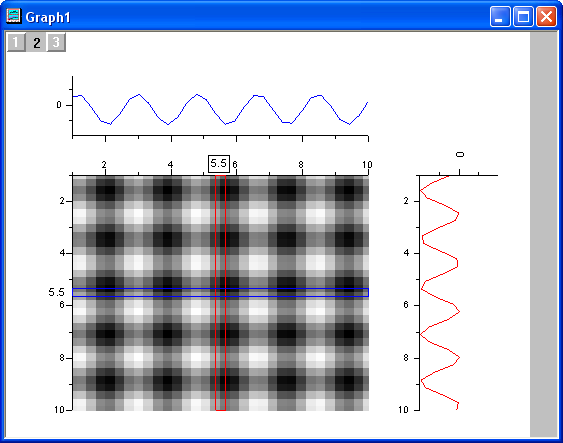
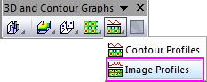

Bildprofile
Image-Profile
- 
Datenanforderungen
- Matrix: Ein Matrixblatt. Ein Blatt mit mehreren Objekten wird unterstützt.
oder
- Arbeitsblatt: In XYZ-Spalten angeordnete Arbeitsblattdaten oder virtuelle Matrix.
oder
- Bild: Ein Bildfenster. Ein Bild mit mehreren Frames wird unterstützt. Lesen Sie auf dieser Seite unten, wie Sie durch alle Frames gehen.
Diagramm erstellen
Aktivieren Sie das Matrixblatt oder wählen Sie die erforderlichen Daten im Arbeitsblatt oder Bildfenster aus.
Wählen Sie im Menü .
oder
Klicken Sie auf die Schaltfläche Bildprofile auf der Symbolleiste 3D- und Konturdiagramme.

Vorlage
PROFILES.OTP (im Origin-Programmordner installiert).
Notizen
- Matrixbilder/Bilder werden als ein Bilddiagramm gezeichnet, das X- und Y-Projektionen beinhaltet.
- Die Oberfläche ermöglicht es Ihnen, dynamische horizontale, vertikale und beliebige Liniensegment-Profile der Bilddatei zu erstellen. Klicken Sie auf die Textbeschriftung der Profillinie und ziehen Sie an ihr, um die Linien auszuwählen und zu verschieben.
- Weitere Informationen zum Erstellen von Profilen für Bilder finden Sie auf dieser Seite in der Origin-Hilfe.